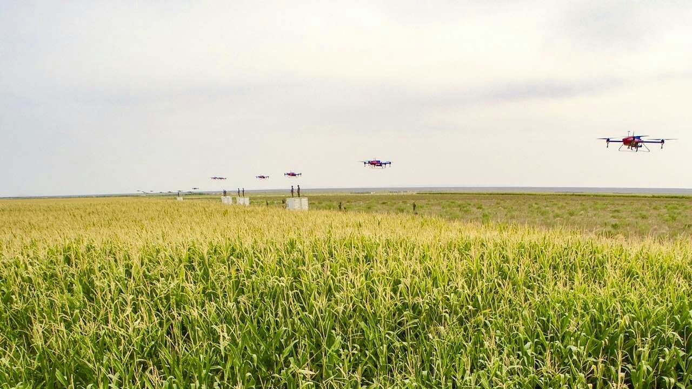
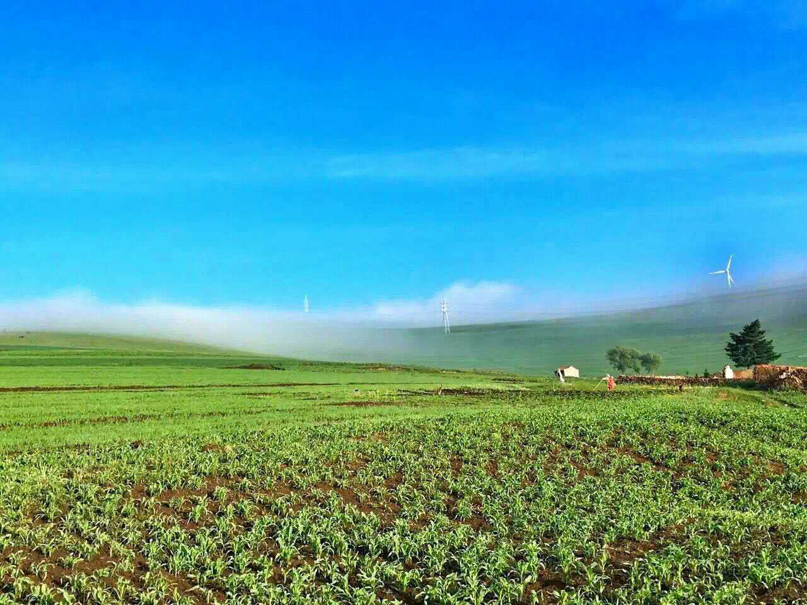
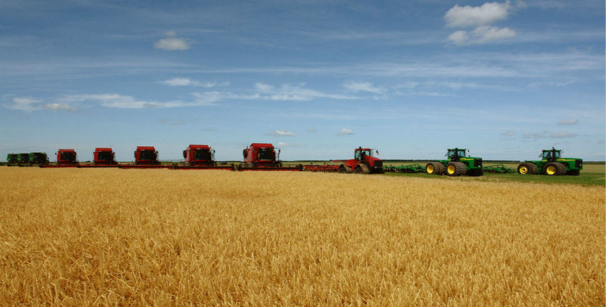
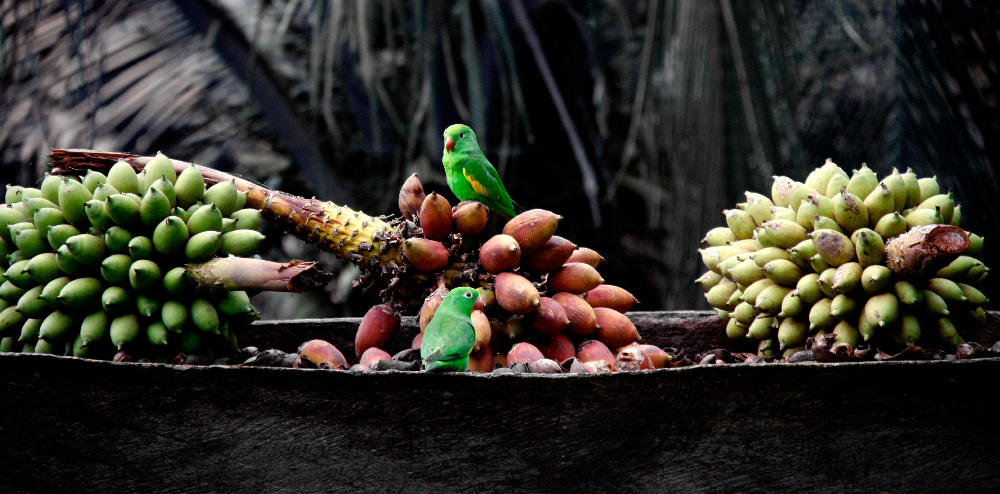

- UAV agricultural application
- Modern farm
- Mechanized harvesting
-
 Modern greenhouse
Modern greenhouse -  Mechanized harvesting

上海交通大学团队再度斩获国际基因工程机器设计大赛金牌
近日，合成生物学国际顶尖赛事——国际遗传工程机器设计竞赛（International Genetically Engineered Machine Competition，iGEM）2016全球总决赛在美国波士顿海因斯会议中心落幕， 上海交通大学的两支参赛队伍SJTU-Software和SJTU-BioX-Shanghai再度获得金牌。

华大基因：生命时代开启，基因工程发展超“摩尔定律”
怎么讲生命时代？所有的生命，不管是人、动植物、微生物都是ATCG，这个世界就是这么简单，就是这么奇妙。而在上世纪最重要的一件事情就是把ATCG变成了0101。这把尺子是在4年前诺贝尔博物馆发现的，这是一个发明的尺子， 一共有两米长，正反两面打开是这样子的。 每一个刻度上都是一个重大的历史事件，要么就是社会的，要么就是科学技术的。

新型转基因小麦产量有望提高20%
英国研究人员正在向英国环境、食品和农村事务部提出一项申请，希望获准在户外研究工作中种植新型转基因小麦。如这项申请获得批准，该团队计划第一年四月开始种植，第二年收获。 在温室研究中，该技术可显著地将作物产量提高了20%—40%。研究人员希望，在户外种植中这一比例至少能达到20%。

皖西学院安徽省植物细胞工程中心喜获2015年度“安徽省工人先锋号”荣誉称号
日前，安徽省劳动竞赛委员会、省总工会表彰了2015年度安徽省劳动竞赛先进集体和先进个人。皖西学院安徽省植物细胞工程中心被授予2015年度“安徽省工人先锋号”荣誉称号。 6月1日下午，省教育工会主席凤桦，在副主席唐成等陪同下来到皖西学院向皖西学院安徽省植物细胞工程中心授牌。
精准育种 微生物 大数据 科技创新——未来农业的出路
在不断涌现的农业技术背后，是朝气蓬勃的农业初创企业和看好农业新技术前景的投资人。 2015年，全球农业投资达到前所未有的100亿美元（约650亿元人民币），对农业技术的风险投资高达46亿美元 （约300亿元人民币），创历年新高。密集涌入的资金为农业领域带来了崭新的技术，加快了农业技术创新的步伐， 不断有新技术被运用到农业领域当中。而在已开发的技术领域中，例如农业生物技术， 也吸引了更多企业和研究者的加入。
高唐锦鲤添锦绣 依赖技术创新实现自主育种
深秋时节，山东省高唐县盛和锦鲤养殖场的锦鲤池内，五彩斑斓的锦鲤在清澈的水中相互簇拥着自由游弋，如水中盛开的朵朵牡丹。“这批价值10万余元的5000尾锦鲤已经被一位南方的客商预订了。”盛和锦鲤养殖场负责人贾清河喜滋滋地告诉记者， “锦鲤养殖从鱼苗到成鱼大约需经4个月时间，品相好的能卖到上万元一尾，预计今年可创收300余万元”。
北京打造全国农业科技创新示范中心
今年全市农业科教工作紧紧围绕都市型现代农业生活、生态、生产与示范功能，突出“节水、生态、安全、高效”的重点，着力加强现代都市农业科技创新体系、 产业技术服务体系和农民科技教育培训体系的建设，打造全国农业科技创新中心和农业科技示范中心。


- 上海交通大学团队再度斩获国际基因工程机器设计大赛金牌
- 华大基因：生命时代开启，基因工程发展超“摩尔定律”
- 新型转基因小麦产量有望提高20%
- 皖西学院安徽省植物细胞工程中心喜获2015年度“安徽省工人先锋号”荣誉称号
- "十二五"期间我国植物分子育种研究取得重要突破
- 精准育种 微生物 大数据 科技创新——未来农业的出路
- 高唐锦鲤添锦绣 依赖技术创新实现自主育种
- 北京打造全国农业科技创新示范中心
- 美国第一头克隆牛“艾米”产下牛犊喜作妈咪
- 普通米诺鱼基因新发现 有助于人类心脏疾病研究
- 克隆牛“牡丹”再次难产 三大关口威胁牛妈妈
- 纳米农药“一点到位”
- 世界粮食奖和沃尔夫农业奖得主力挺转基因
- 袁隆平种出了“海水稻”
- 超级稻20年：累计推广种植10.9亿亩 增收600亿公斤稻谷
- 农业“嫁接”光伏，结什么果？
- 农用聚磷酸铵引领磷肥液体化新方向
- 秸秆颗粒肥研制成了